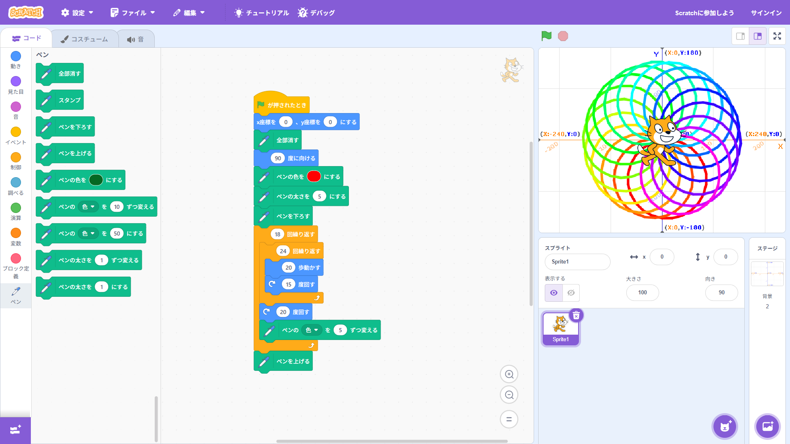
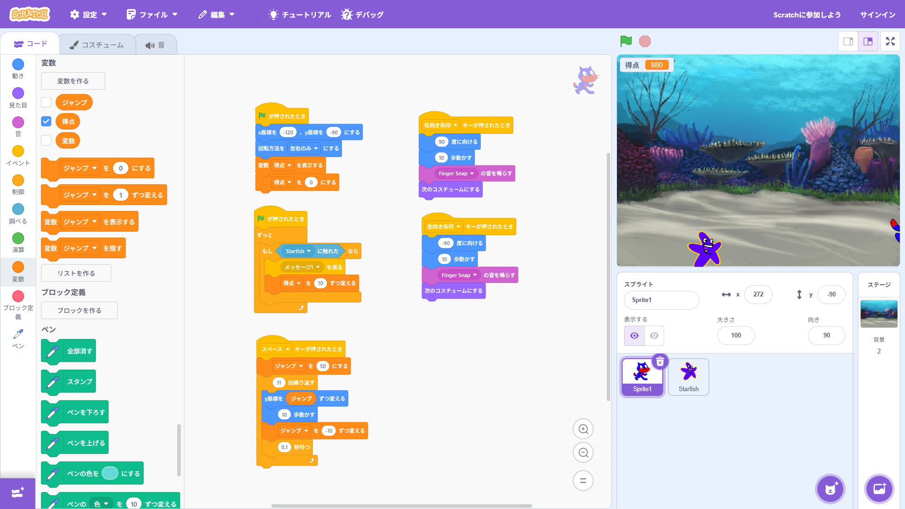

1週目のレポート ： 公大高専１年実習I-1
4a班1番 ruton3ko
第1週目
1-1 サイエンスアート

1.内容
学習した内容を説明する文章を
自分で考えて作成する（50文字以上．100文字程度を推奨．※生成AIを使ってはいけない）
・スクラッチでプログラミングを行った。フィールド上にいる猫をプログラミングで動かし猫に拡張機能でペンを持たせいろいろな模様を描いた。
プログラミングをすることで人それぞれの思い描いた模様をスクラッチ上で描いた。
2.感想
学習した内容を実践したときに自分が感じた感想を
自分で考えた文章で作成する（50文字以上．100文字程度を推奨．※生成AIを使ってはいけない）
・小学生のころや中学生のころにスクラッチでゲームやアニメーションを作成したことはあったが、拡張機能を使って自分の思い描いた模様を描くことができる機能を初めて知り、
スクラッチで物を作ることのできる種類を、さらに広げることができてとても楽しかった。
1-2 ゲーム

1.内容
学習した内容を説明する文章を
自分で考えて作成する（50文字以上．100文字程度を推奨．※生成AIを使ってはいけない）
・スクラッチにあるスプライトや背景を一つ一つプログラミングし、猫がリンゴが拾うゲームを作成した。各々の選んだ各スプライトにプログラミングを組むことでゲームを作成できる
2.感想
学習した内容を実践したときに自分が感じた感想を
自分で考えた文章で作成する（50文字以上．100文字程度を推奨．※生成AIを使ってはいけない）
・スクラッチでたくさんのブロックを組み合わせ、それぞれのスプライト間で条件や情報をやり取りすることで面白いゲーム作りができてとても楽しかった。
1-3 ホームページ作成
私のホームページ
1.内容
学習した内容を説明する文章を
自分で考えて作成する（50文字以上．100文字程度を推奨．※生成AIを使ってはいけない）
githubでアカウントを作成し、ウェブサイトをフォークし、自身のウェブサイトとして、文字を書き入れたり、画像を挿入したりしウェブサイトの作成方法を学習した。
2.感想
学習した内容を実践したときに自分が感じた感想を
自分で考えた文章で作成する（50文字以上．100文字程度を推奨．※生成AIを使ってはいけない）
ホームページを作成した経験はなく
各ページへのリンク
1週目のレポート
2週目のレポート
3週目のレポート
私のホームページ